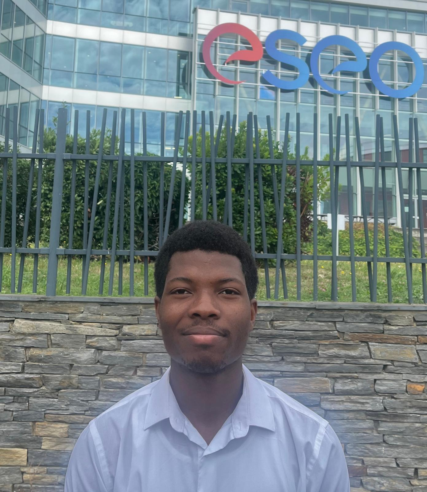

Kewen
AGOSSA
Étudiant en 3ᵉ année à l’ESEO, passionné par l’électronique et l’IoT, je souhaite appliquer mes compétences en systèmes embarqués et relever de nouveaux défis technologiques.
Mars 2026 - Août 2026 (06 mois)
Étudiant en 3ᵉ année à l’ESEO, passionné par l’électronique et l’IoT, je souhaite appliquer mes compétences en systèmes embarqués et relever de nouveaux défis technologiques.
Développement d’un système embarqué de renouvellement d’air automatisé (fenêtre connectée) : capteurs + BLE + conception PCB.
Capteur BME180, nRF52, BLE, C, PCB (Altium Designer)
Système RFID UHF sur Raspberry Pi pour détecter un tag EPC cible, filtrage EPC, alertes LED/buzzer, et optimisation de l’alimentation.
Python, RFID UHF, Linux embarqué, GPIO
Développement d’un système embarqué BLE sur nRF52832 : capteurs I²C (pression, température, fréquence cardiaque) et écran OLED SPI. Communication BLE centrale/périphérique (NUS) + affichage temps réel.
nRF52832, C, Nordic SDK, BLE (NUS), I²C, SPI, BMP180, MAX30102, MLX90614, SSD1309, Git, Linux

Maison intelligente : éclairage, contrôle d’accès et portes automatisées par télécommande.
STM32F103, STM32CubeIDE, UART, I²C, SPI
Commande moteur via PWM, mesure position/vitesse par codeur incrémental (mode encodeur), interruptions périodiques (10 ms) et régulation PI (vitesse).
STM32F103 (NUCLEO), HAL, Timers (PWM/IT/Encoder), UART (Docklight), L298N, Correcteur PI
Mise en œuvre d’un Security Operations Center (SOC) basé sur la stack ELK pour la centralisation, l’analyse et la détection d’incidents de sécurité.
Docker, Elasticsearch, Logstash, Kibana, Syslog, Filebeat, Winlogbeat, YARA
Conception d’une infrastructure réseau d’entreprise multi-sites : plan d’adressage, segmentation, routage inter-sites et préparation des commandes Cisco IOS.
Cisco Packet Tracer, Subnetting, Routage, Cisco IOS
Jeu de squash 1 joueur en VHDL avec affichage VGA et contrôle par boutons. Gestion du score, collisions et états de jeu en logique matérielle.
VHDL, FPGA, VGA, Vivado, ModelSim
Conception d’un jeu type Tetris en Java avec réalisation de tests unitaires JUnit.
Java, POO, JUnit, Eclipse